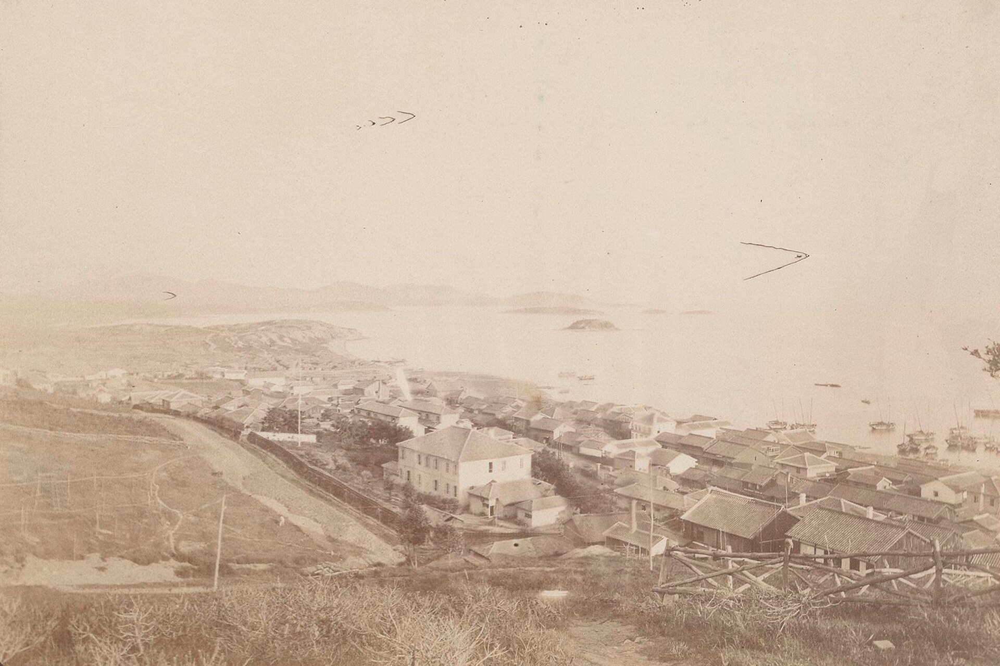
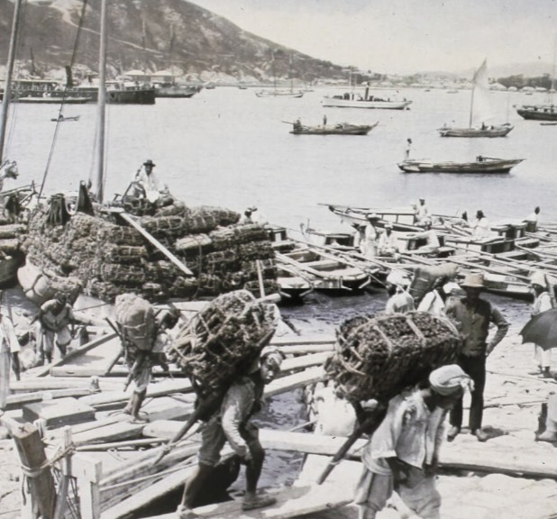

[인천경제&경제사②] 1883년 인천 개항장, 관세권은 일부 회복, 조계 땅은 「영구히」 조차
조일통상장정과 조계 조약 다시 읽기… 두 조약에 없는 짐꾼 품삯
AI경제저널=김갑봉 기자 | 1883년 1월 인천이 개항했다. 1876년 조일수호조규 제5관에 근거한 개항이었다. 7월 25일 조선과 일본은 조일통상장정을 맺었다. 9월 30일에는 두 나라가 인천항 일본 조계 조약을 맺었다.
조계는 개항장에서 외국인이 땅을 빌려 살며 장사하게 떼어 준 구역이다. 42관으로 된 장정은 통상과 세금을 정했고, 10조로 된 조계 조약은 땅을 정했다. 부두에서 짐을 지는 사람의 품삯은 두 조약 어디에도 없다.

관세 없는 7년, 1883년 일부 회복한 관세권
1876년 조일무역규칙과 함께 주고받은 문서로 조선은 대일 수출입 화물에 관세를 매기지 못했다. 무관세는 1883년 장정과 해관세칙이 나올 때까지 7년 이어졌다. 1878년 9월 28일부터 조선은 부산 두모진 해관에서 조선 상인에게 세금을 거뒀다. 일본의 항의와 무력 위협에 그해 12월 26일 거두기를 멈췄다.
1882년 조미수호통상조약은 관세 상한을 일반 수입품 10%, 사치품 30%, 수출품 5%로 정했다. 이듬해 장정과 함께 해관세칙이 나왔다. 수입세는 약재·식료·잡화 5%, 일반 품목 8~10%, 양주·보석류 등 사치품 25~30%였다.
수출세는 5%, 홍삼은 15%였다. 세칙 세율이 조미조약보다 낮자 영국과 독일이 인하를 요구했다. 뒤이은 조영조약 세율이 최혜국 조항으로 함께 적용되면서 관세율은 더 내려갔다. 박기주는 관세주권을 어느 정도 되찾았지만 세율을 바꾸려면 여러 상대국 승인이 필요해 불완전한 회복이었다고 본다.
제31관은 조선 정부가 통상 항구를 고쳐 쌓고 등대와 부표를 세운다고 정했다. 그 비용에 쓰게 일본 상선에 톤당 225문씩 톤세를 물렸다. 제42관은 조선이 다른 나라에 주는 혜택을 일본도 똑같이 누린다는 최혜국 조항과 시행 5년 뒤 개정을 함께 정했다.
제37관은 가뭄과 홍수, 전쟁으로 양식이 모자랄 우려가 있으면 방곡령(쌀 수출 금지령)을 내릴 수 있게 했다. 다만 지방관이 1개월 전에 일본 영사관에 알려야 했다. 곡물에는 수출입 모두 5%(100분의 5)를 매겼다.
해관 세무사는 신고 가격이 맞지 않다고 보면 간화인(값을 보는 사람)이 매긴 값으로 세금을 거둘 수 있었다. 화주에게는 24시간 안에 불복하고 스스로 고른 사람에게 값을 다시 매기게 할 권리가 있었다. 해관은 그 값으로 세금을 거두거나, 그 값에 100분의 5를 더해 화물을 사들일 수 있었다(제12관).
관세를 낸 화물에는 다른 세금을 매길 수 없었다. 수입품이 내지로 들어가거나 내지 물건이 항구로 나올 때 운반세와 내지 관세 등 일체의 세금을 물리지 않게 했다(제18관). 연구자 오성은 이 조항이 사실상 조선의 세권을 제한했다고 본다.
경매로 빌려준 조계 땅, 「영구히」 조차
조계 조약 제1조는 지도에 붉은 금을 그은 곳을 일본 상인 거주지로 내준다고 적었다. 까닭은 「일본 상인들이 선착으로 온 것에 대한 보답」이었다. 조계가 다 차면 조선 정부가 넓혀 줘야 했고, 일본 상인은 다른 나라 조계에도 마음대로 살 수 있었다.
땅을 빌려주는 방식은 경매였다. 도로와 도랑을 뺀 땅은 가장 높은 값을 부른 일본인에게 빌려줬다(제2·5조). 조선 정부는 해마다 지세를 걷되 3분의 2만 가졌다. 나머지 3분의 1은 도로·도랑·다리·가로등 보수와 순포(巡捕, 조계 순찰 경찰) 운영 같은 조계 사업 비용으로 떼어 뒀다(제4조).
땅 문서 양식에는 「영구히」 빌려준다고 적었다. 받는 사람은 일본 상인이나 그 승당인(권리를 이어받은 사람), 상속인이었다(제8조). 조약에는 조선 독판교섭통상사무 민영목과 일본 변리공사 다케조에 신이치로가 이름을 적고 도장을 찍었다.
이듬해인 1884년 청국 조계와 각국 공동조계가 잇달아 생겼다. 인천구화상지계장정은 청국 조계를 제물포 해관 서북쪽에 붉은 선으로 그어 정했다. 땅은 같은 경매 방식으로 중국 상인에게 「영구히」 빌려줬다(제1·4조).
칼 폴라니는 1944년 『거대한 전환』에서 토지와 노동과 화폐를 허구 상품이라 불렀다. 팔려고 만든 물건이 아닌데 상품처럼 거래된다는 뜻이다. 그에게 땅은 사람이 만들지 않은 자연의 다른 이름이다. 인천 개항장에서는 그 땅을 쓸 권리가 경매로 「영구히」 넘어갔다.

부두에 선 근대 임금노동자
김윤환은 근대 임금노동의 출발을 19세기 말 개항장 부두노동자와 각지 광산노동자에게서 찾는다. 김봉석은 개항장 무역이 커지자 하역업이 객주(상인 겸 중개인) 손에서 떨어져 나와 독립 하역기업이 됐다고 쓴다. 물동량이 불어나면서 부두에서 품을 파는 임금노동자도 크게 늘었다.
장정에서 노동을 다룬 조문은 제8관이다. 일본인은 개항장에서 조선의 차부와 선부를 편리에 따라 고용할 수 있었다. 조선 관리는 간섭할 수 없었고, 사람을 구하기 어려우면 조선 해관이 도와야 했다. 고용할 권리는 적었지만 품삯은 정하지 않았다.
개항기부터 일제강점기까지 인천항에서 하역업을 한 대화조(大和組)의 사무소가 지금도 남아 있다. 2013년 8월 등록문화재가 됐고 지금 분류 명칭은 국가등록문화유산이다. 국가유산청은 이 건물을 일제강점기 하역노동자의 노동력을 착취한 현장이라고 설명한다.
2026년 7월 1일 중구 내륙과 동구가 합쳐 제물포구가 출범했다. 대화조 사무소의 주소도 제물포구 신포로27번길로 바뀌었다. 옛 조계 자리에 남은 각국 조계지 계단의 주소도 제물포구 자유공원남로 38이다.
참고문헌
논문과 연구서
- 김진태, 「조선개항과 근대 관세제도에 관한 연구」, 『사회과학논총』 제45권 제2호, 2021년 12월, 47~75쪽. https://www.konkuk.ac.kr/bbs/ssori/1396/904532/download.do
- 오성, 「외국과의 통상 조약 체결 및 관세」, 『한국문화사 16 장시에서 마트까지 근현대 시장 경제의 변천』, 국사편찬위원회 우리역사넷. https://contents.history.go.kr/mobile/km/view.do?levelId=km_016_0050_0040_0010
- 「해관의 개설과 관세의 수세」(Ⅱ-3-2-(2) 상업의 보호와 수세정책), 『신편 한국사』 38 개화와 수구의 갈등, 국사편찬위원회 우리역사넷. https://contents.history.go.kr/mobile/nh/view.do?levelId=nh_038_0030_0030_0020_0020
1차 사료
- 「조일통상장정을 체결하다」, 『고종실록』 20권, 고종 20년 6월 22일(양력 1883년 7월 25일), 국사편찬위원회 조선왕조실록. https://sillok.history.go.kr/id/kza_12006022_004
- 「인천항의 일본 조계 조약을 체결하다」, 『고종실록』 20권, 고종 20년 8월 30일(양력 1883년 9월 30일), 국사편찬위원회 조선왕조실록. https://sillok.history.go.kr/id/kza_12008030_003
- 「인천항 중국상인들의 거주지역에 관한 규정을 체결하다」, 『고종실록』 21권, 고종 21년 3월 7일(양력 1884년 4월 2일), 국사편찬위원회 조선왕조실록. https://sillok.history.go.kr/id/kza_12103007_004
- 「조일수호조규」(1876) 제5관, 위키문헌 원문. https://ko.wikisource.org/wiki/조일수호조규
- Karl Polanyi, 『The Great Transformation』, Farrar & Rinehart, 1944, 제6장 「The Self-regulating Market and the Fictitious Commodities: Labor, Land, and Money」. https://archive.org/details/in.ernet.dli.2015.46560
공공기관 자료
- 한주성, 「인천항」, 『한국민족문화대백과사전』, 한국학중앙연구원, 집필 1995, 최종수정 2023.2.7. https://encykorea.aks.ac.kr/Article/E0047102
- 박준형, 「인천조계조약」, 『한국민족문화대백과사전』, 한국학중앙연구원, 집필 2016, 최종수정 2024.8.21. https://encykorea.aks.ac.kr/Article/E0078164
- 이원순, 「조일통상장정」, 『한국민족문화대백과사전』, 한국학중앙연구원, 집필 1995, 최종수정 2023.2.7. https://encykorea.aks.ac.kr/Article/E0052539
- 박기주, 「해관세칙」, 『한국민족문화대백과사전』, 한국학중앙연구원, 집필 2023, 최종수정 2024.8.5. https://encykorea.aks.ac.kr/Article/E0081005
- 박귀훈, 「관세」, 『한국민족문화대백과사전』, 한국학중앙연구원, 집필 1995, 최종수정 2023.4.13. https://encykorea.aks.ac.kr/Article/E0004910
- 최태호, 「해관」, 『한국민족문화대백과사전』, 한국학중앙연구원, 집필 1995, 최종수정 2026.5.28. https://encykorea.aks.ac.kr/Article/E0062427
- 김봉석, 「부두 노동자」, 『한국민족문화대백과사전』, 한국학중앙연구원, 집필 1995, 최종수정 2023.2.7. https://encykorea.aks.ac.kr/Article/E0024130
- 김윤환, 「노동운동」, 『한국민족문화대백과사전』, 한국학중앙연구원, 집필 1995, 최종수정 2023.2.7. https://encykorea.aks.ac.kr/Article/E0012688
- 「각국 조계지 계단」, 인천광역시 인천지역유산. https://www.incheon.go.kr/culture/CU06010002/3064066
- 「국가등록문화유산 인천 구 대화조 사무소」, 국가유산청 국가유산포털. https://www.heritage.go.kr/heri/cul/culSelectDetail.do?ccbaCpno=4412305670000
- 「('25.3.12.) 제물포구 출범 화합을 위한 중·동구 주민 첫 만남」, 인천광역시 보도자료, 작성일 2025.5.15. https://www.incheon.go.kr/IC01070105/3012621
언론 보도
- 이한규, 「인천 제물포구, 출범 기념 구청장 첫 민원서류 발급」, 내외일보, 2026.7.1. https://www.naewoeilbo.com/news/articleView.html?idxno=2373186
[사진 출처]
- [사진1] d'Amade, "Ville de Chémulpo, ouverte au Commerce étranger, à l'embouchure de la rivière de Séoul", 1890, 프랑스국립도서관 갈리카(btv1b531948622), 위키미디어 공용, 퍼블릭 도메인. https://commons.wikimedia.org/wiki/File:Chemulpo_(Incheon),_1890.jpg
- [사진2] Samuel Austin Moffett(추정), "The dried fish Yard of Chemulpo", 1900, Moffett Korea Collection, 프린스턴신학교, 위키미디어 공용, 퍼블릭 도메인(미국 미발행 저작물 기준). https://commons.wikimedia.org/wiki/File:ChemulpoHarbor.png